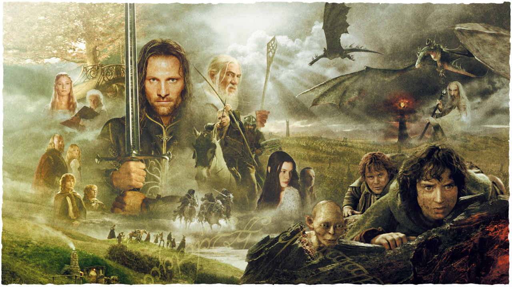
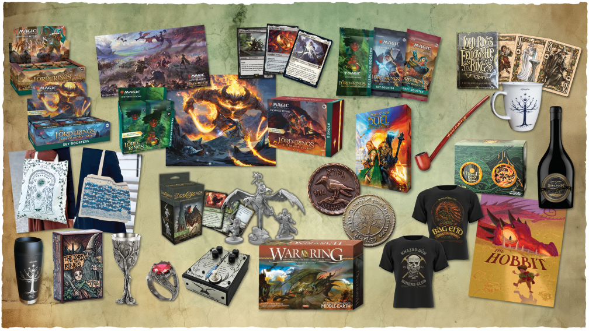
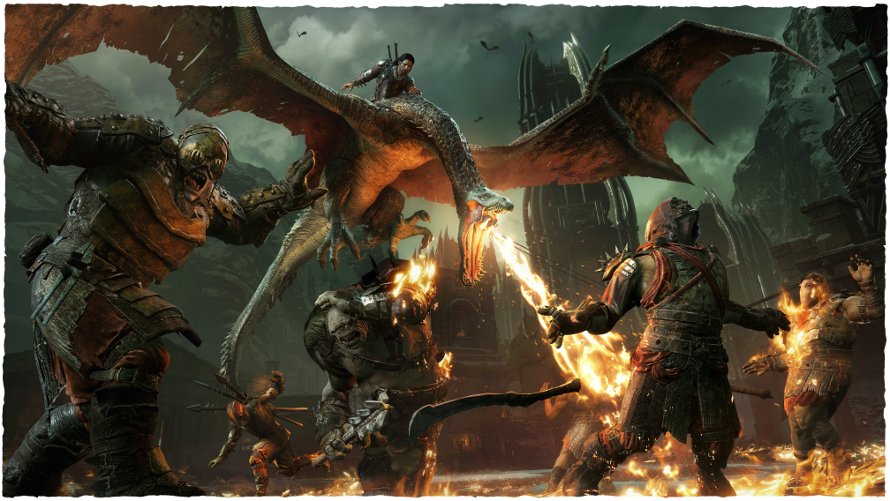

HISTORIA
O Senhor dos Anéis, a obra-prima de fantasia épica de J.R.R. Tolkien, narra a jornada para destruir o Um Anel e derrotar o Senhor Sombrio, Sauron, que ameaça escravizar toda a Terra-média. A história é dividida em três partes principais, acompanhando a separação de um grupo de heróis em missões paralelas para salvar o mundo.
Filme 2001(Mais famoso)

A trilogia épica de Peter Jackson, inspirada nos livros de O Senhor dos Anéis , trouxe as obras-primas literárias atemporais de J.R.R. Tolkien para as telas de cinema com uma grandiosidade cinematográfica. Lançada ao longo de três anos, de 2001 a 2003, a trilogia O Senhor dos Anéis cativou o público mundial, conquistando aclamação da crítica, sucesso comercial e um número fenomenal de prêmios prestigiosos, incluindo 17 Oscars. Com seus efeitos visuais inovadores, narrativa épica e atenção meticulosa aos detalhes, a adaptação de Jackson estabeleceu um novo padrão para a produção cinematográfica e revolucionou a abordagem da indústria em relação a grandes franquias de filmes. A trilogia O Senhor dos Anéis não apenas redefiniu as possibilidades da narrativa cinematográfica, como também deixou um legado duradouro como uma das maiores conquistas da história do cinema, inspirando novas gerações de contadores de histórias e cineastas. A Sociedade do Anel
PEÇAS DE TEATRO
" O Senhor dos Anéis - Um Conto Musical " teve uma temporada triunfal no Watermill Theatre, no Reino Unido, no verão de 2023, cativando o público com sua encantadora mistura de música, espetáculo e narrativa. Adaptada da trilogia épica de fantasia de J.R.R. Tolkien, a produção teatral dá vida à Terra-média em uma experiência imersiva. Com cenários inovadores, visuais deslumbrantes e números musicais memoráveis, a produção transporta os espectadores para o coração do mundo mítico de Tolkien, juntando-se a Frodo, Gandalf, Galadriel, Arwen, Aragorn e outros personagens icônicos em sua jornada para destruir o Um Anel. Com um elenco talentoso e uma equipe criativa de peso, " O Senhor dos Anéis - Um Conto Musical" continua a receber aclamação da crítica e elogios generalizados por sua ambiciosa adaptação da amada obra-prima, consolidando seu lugar como um evento teatral imperdível. Após uma temporada de sucesso em sua estreia nos EUA, no The Yard do Chicago Shakespeare Theater, em julho de 2024, A Musical Tale estreia no Civic Theatre em Auckland, Nova Zelândia, em novembro, e na Austrália em 2025, retornando a Portsmouth, Reino Unido, no final de 2025, antes de excursionar pela União Europeia em 2026. The Lord of the Rings - A Musical Tale é uma coprodução da Middle-earth Enterprises e da Kevin Wallace Productions.
PRODUTOS DE CONSUMO

Produtos de consumo baseados nos direitos literários oferecem uma oportunidade extraordinária para criar uma visão única da Terra-média. Com criatividade ilimitada e atenção aos detalhes, essas ofertas permitem que os fãs mergulhem na magia da Terra-média, criando conexões com seus personagens e momentos favoritos, ao mesmo tempo que exibem o legado duradouro dessas histórias tão amadas.
JOGOS DE VIDEO
Ao longo dos últimos 50 anos, os ricos mundos de O Senhor dos Anéis e O Hobbit inspiraram inúmeras adaptações para videogames, desde aventuras baseadas em texto nos primórdios dos jogos até experiências imersivas de mundo aberto nos últimos anos, cativando os jogadores com narrativas envolventes e personagens icônicos.
